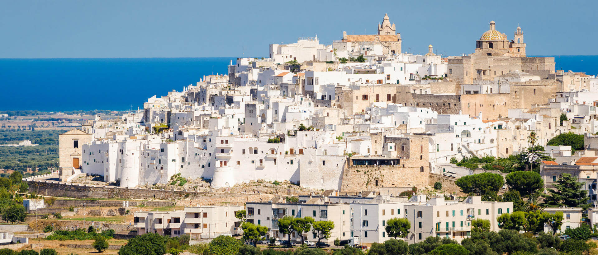

Que visiter?
Marina di Pulsano


La zone de Pulsano Marina se caractérise par une succession de falaises et de criques de sable, dont les principales sont Luogovivo, la Fontana, le Canne, Montedarena, Ospedale Capparone (ou Villa Verde), Pezzarossa, Serrone, Lido Silvana ( dans dont le golfe est présent un îlot rocheux, également accessible à la nage, et dont la plage sont encore présents, mais en plus petit nombre que dans le passé, des spécimens de genévrier qui posent leurs racines entre le sable), Terrarossa et Lido Checca (rin partie dans l'enclave précitée de la municipalité de Taranto). La zone Marina de Pulsano et l'arrière-pays jouissent d'une renommée particulière parmi les touristes qui visitent le Salento en vertu de la richesse naturelle, historique et la nourriture et le vin que vous pouvez essayer ici. Ses profondeurs sont faibles et indiquées pour un tourisme de type familial, c'est l'endroit idéal pour pratiquer la plongée en apnée et les activités sous-marines. Les plages sont équipées d'un point de vue baignade et touristique.
Taranto
-
 Castello Aragonese
Castello Aragonese -
 Ponte Girevole
Ponte Girevole -
 Ponte di Pietra
Ponte di Pietra -
 Monumento al marinaio
Monumento al marinaio -
 Palazzo Prefettura
Palazzo Prefettura
> Elle est appelée « la ville des deux mers », Taranto, lavé par la Grande Mer et la Petite Mer avec un emplacement stratégique qui a fait le protagoniste des événements historiques importants. Les anciens témoignages les plus précieux sont conservés au Musée national d'archéologie, MarTa, où vous pourrez admirer le fameux « or de Tarente », Beaux-arts productions locales Orfèvre entre le quatrième et le deuxième siècle avant notre ère, ainsi que l'immense collection de découvertes archéologiques de toute la province ionienne L'histoire de Tarente longe les deux ponts qui relient la vieille ville à la moderne. En plus du pont en pierre construit après l'inondation de 1883, le pont tournant ouvert en 1887, a encore le charme des grands travaux de génie mécanique et de plomb dans le dédale des rues étroites autour de la centrale Via Cava, le long de laquelle fleurissent plusieurs ateliers. Dans cette hausse isthmique et noble architecture des différentes époques et styles églises comme la cathédrale de San Cataldo entre roman et baroque, ou celle de San Domenico avec des caractéristiques gothiques.
Valle d'Itria
-
 Alberobello
Alberobello -
 Martina Franca
Martina Franca -
 Ceglie Messapica
Ceglie Messapica -
 Cisternino
Cisternino -

Ostuni
Trulli entouré de vignes et d'oliviers à perte de vue, c'est le visage le plus authentique de la Vallée d'Itria. Le paysage remplit le regard d'une magie intemporelle, au cœur de charmants villages tels que Alberobello, Martina Franca, Ceglie Messapica et Cisternino. Ostuni ressemble à un mirage, belle sur la colline du plateau couvert d'oliviers, où le vert plonge dans le bleu de la mer Ardrial. Juste une promenade dans les ruelles pour admirer les belles cours et les places encadrées par des maisons blanches, des boutiques d'artisanat et des restaurants où ils cuisinent de délicieux rôtis de viande et de savoureux légumes de saison.Vous y vivrez serein, immergé dans les arômes et les saveurs du passé .